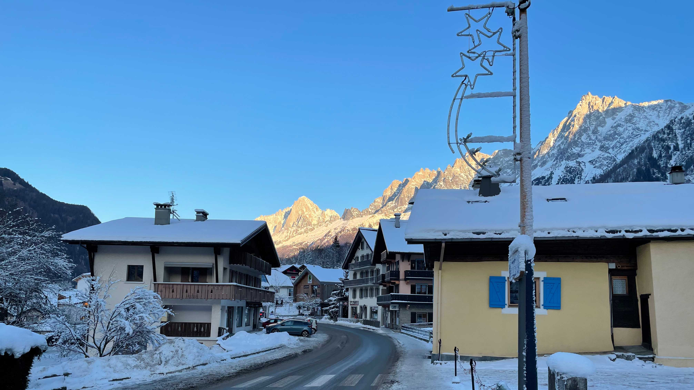
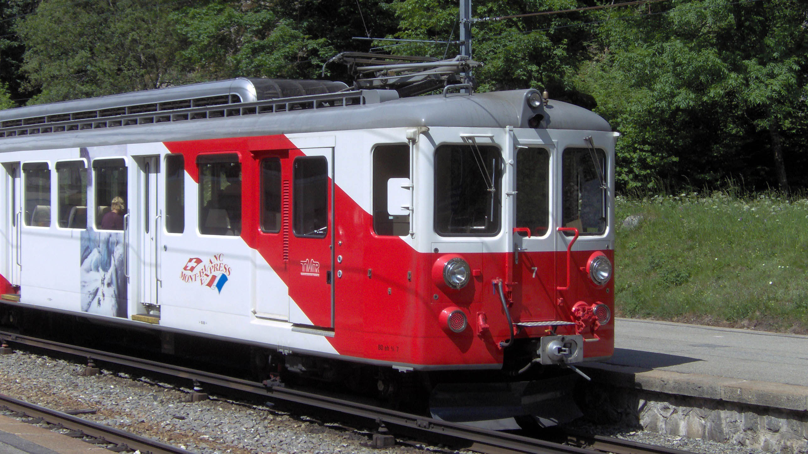

Transports en commun
Chamonix Bus
4 lignes régulières desservent la Vallée de Chamonix toute l'année:
Ligne 1:Les Houches - Chamonix - Les Praz/Flégère : un bus toute les 30 minutes environ de 7h à 20h (toutes les heures les dimanches et fêtes en intersaison printemps et automne).
Ligne 2:Les Bossons - Chamonix - Le Tour : un bus toute les 30 minutes de 7h à 20h (toutes les heures les dimanches et fêtes en intersaison printemps et automne).
Ligne 3:Servoz - Les Houches - Chamonix : 3 Aller/Retour par jour (sauf Dimanches et fêtes).
Le Mulet(gratuit):Navette gratuite dans le centre de Chamonix : un bus toutes les 20 minutes en saison et toutes les 30 minutes en intersaison.
Des lignes saisonnières viennent renforcer cette offre en Hiver et en Été.
Ligne 1:Les Houches - Chamonix - Les Praz/Flégère : un bus toute les 30 minutes environ de 7h à 20h (toutes les heures les dimanches et fêtes en intersaison printemps et automne).
Ligne 2:Les Bossons - Chamonix - Le Tour : un bus toute les 30 minutes de 7h à 20h (toutes les heures les dimanches et fêtes en intersaison printemps et automne).
Ligne 3:Servoz - Les Houches - Chamonix : 3 Aller/Retour par jour (sauf Dimanches et fêtes).
Le Mulet(gratuit):Navette gratuite dans le centre de Chamonix : un bus toutes les 20 minutes en saison et toutes les 30 minutes en intersaison.
Des lignes saisonnières viennent renforcer cette offre en Hiver et en Été.

Les Houches en hiver
Mont Blanc Express
Le Mont Blanc Express est une ligne ferroviaire régionale entre la gare de St Gervais le Fayet en France et Martigny en Suisse.
La circulation est d'un train toutes les une à deux heures de 7h à 20h entre St Gervais et Vallorcine. L'exploitant Suisse TMR assure la suite du trajet entre Vallorcine et Martigny
Pendant les saison d'hiver et d'été, la fréquence des trains est renforcée entre Les Houches et Vallorcine pour ateindre un train toutes les 30 minutes à certaines periodes de la journée.
La circulation est d'un train toutes les une à deux heures de 7h à 20h entre St Gervais et Vallorcine. L'exploitant Suisse TMR assure la suite du trajet entre Vallorcine et Martigny
Pendant les saison d'hiver et d'été, la fréquence des trains est renforcée entre Les Houches et Vallorcine pour ateindre un train toutes les 30 minutes à certaines periodes de la journée.

Le Mont Blanc Express en gare du Chatelard Frontière en Suisse